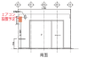

2022年
問題93 建築物の設計図書(意匠図面)に関する次の記述のうち，最も不適当なものはどれか．
（1）配置図は，建築物と敷地の関係を示した図で，外構計画などを併せて示すことがある．
（2）平面図は，部屋の配置を平面的に示した図で，家具や棚等も記入することがある．
（3）立面図は，建築物の外観を示すものである．
（4）展開図は，建物内の雰囲気や空間構成を立体的に示すものである．
（5）詳細図は，出入口，窓，階段，便所，その他の主要部分の平面，断面等の収まりを示すものである．
2022年
問題93 正解（4） 頻出度AAA
建物内の雰囲気や空間構成を立体的に示すのは，「透視図」である（2022-93-1図参照）．
2022-93-1図 透視図の例
出典 マンガ業界情報局
https://www.amgakuin.co.jp/contents/comic/column/work/assistant
「展開図」は，各室の内部壁面の詳細．各壁面の窓やドア，造作家具，設備機器などを示し，天井の高さや窓の取り付け位置なども併せて示す図面である（2022-93-2図参照）．
2022-93-2図 展開図の例

出典 家づくりを応援する情報サイト
https://polaris-hs.jp/zisyo_syosai/tenkai.html#google_vignette
意匠図の種類については2022-93-1表参照．
2022-93-1表 意匠図
| 図面名称 | 内容 |
| 建築概要書 | 建築物の規模，階数，構造，設備の概要． |
| 仕様書 | 工法や使用材料の種別・等級・方法・メーカー等． |
| 面積表 | 建築面積，延床面積，建ぺい率，容積率等． |
| 仕上表 | 外部・内部の表面仕上材や色彩等． |
| 案内図 | 敷地環境・都市計画関連，方位，地形等．必ず北を上にする． |
| 配置図 | 敷地内での建物の位置，方位，道路との関係等を示す．庭園樹木等も記入する． |
| 平面図 | 部屋の配置を平面的に示したもの．家具や棚等も記入することがある． |
| 立面図 | 建築物の外観，普通は東，西，南，北の4面，隠れた部分は別図で示す． |
| 断面図 | 建築物の垂直断面で，主要部を2面以上つくる．垂直寸法関係を示す． |
| 矩計図 | 建築物の基礎を含む主要な外壁部分の各部寸法を示した垂直断面詳細． |
| 詳細図 | 出入口，窓，階段，便所，その他主要部分の平面・断面・展開などの詳細な収まりを示す． |
| 展開図 | 各室の内部壁面の詳細．各壁面の窓やドア，造作家具，設備機器などを示し，天井の高さや窓の取り付け位置なども併せて示す |
| 天井伏図 | 天井面の仕上材，割付，照明の位置等記入． |
| 屋根伏図 | 屋根面の見おろし図，形状，仕上げ，勾配等を示す． |
| 建具表 | 建具の詳細，付属金物，数量，仕上げを示す． |
| 原寸図 | 実物大の各部取り合い，仕上げの詳細を示す．現寸図ともいう． |
| 施工図 | 工事手順や施工の要点を施工者に分かるように明示した図面．原寸図とともに建築基法のいう設計図書に該当しない現場用図面． |
| 透視図 | 雰囲気や空間の構成を理解しやすいように絵で表現したもの． |
| 日影図 | 冬至日の建築物が造る影を時刻毎に平面図に書き込み図面化したもの． |